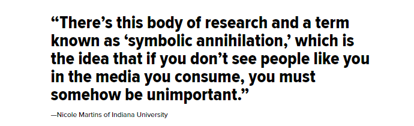

With the Oscars of 2015 being referred to as “the whitest Oscars since 1998,” many people have been discussing the importance of representation in the media. “I work in the entertainment industry, and the lack of diversity is mind-blowing,” Sadeeq Ali, college sophomore, said. “Shonda Rhimes, writer and creator of shows such as Grey’s Anatomy and Scandal, was given an award for her ‘color-blind,’ casting choices. The mere fact that an award for this is given out is indicative of how big of a problem this is.”
Representation creates relatable and powerful role models and sources of inspiration. What many seem to take for granted is the power of having a role model that you can look up to and relate to. Having a black female role model was the reason the talented Lupita Nyong’o felt she could make it in acting. “Everyone should have characters or images they can relate to. It’s part of how we understand ourselves,” Tate Sheppard, University of Minnesota freshman, said.
Simone Ritchie, a freshman at the SUNY Purchase school who self-identifies as biracial, said she never remembers seeing characters on television “who looked like her.”
“When I was asked to draw pictures of myself, I would always give myself a head of blonde hair until I was about six years old,” Ritchie said. “Why did I want to do this? Because I thought that being blonde was way prettier than having dark hair. However, part of me likes to think that if the movies and TV shows I watched showed a more accurate representation of who I was, I might have been more willing to embrace who I was at a younger age.”
“I want movies where actresses that look like me are cast in leading roles, because there are women who look like that who live those lives in reality. They don’t have a white woman to step in and live out their problems,” Ritchie said. “The media is a monumentally important influence in our lives, whether we want it to be or not. We all absorb it, whether or not we’re trying to. Who are we to deprive young men and women with an image that doesn’t look like them?”
Roberto Mirabal Rivera Universidad Interamericana, Recinto de Ponce Published: December 13 Last Updated: December 13